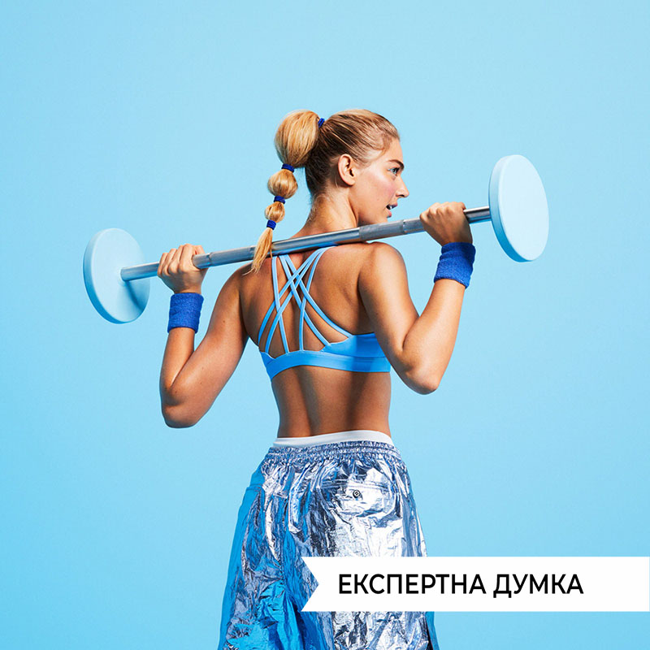

Спорт - це життя
Роль спорту в житті людини є найголовнішим атрибутом в способі життя людей, які стежать за здоров’ям і хочуть зберегти свою красу та привабливість тіла на довгі роки. Займаючись спортом, Ви не тільки отримаєте струнку та красиву фігуру, але й добре здоров’я. Є люди, в яких спорт – це сенс життя. Ці спортсмени відомі на весь світ. Вони є майстрами спорту та встановлюють свої особисті рекорди. Цей спорт називається професійним. Ми вважаємо, що спортом займатися необхідно кожній людині. Спорт зміцнює здоров’я, розвиває фізичні дані. Недарма кажуть: «У здоровому тілі – здоровий дух!». Люди, що займаються спортом, менше хворіють. Фізичні вправи повертають здоров’я багатьом людям.
01.05.2023